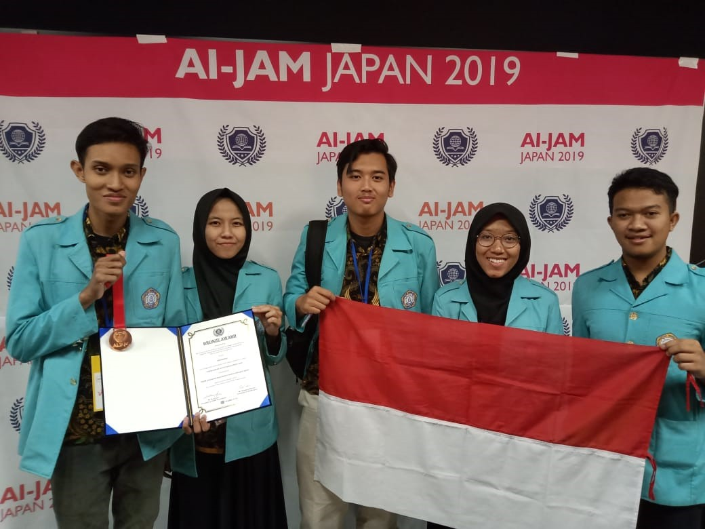
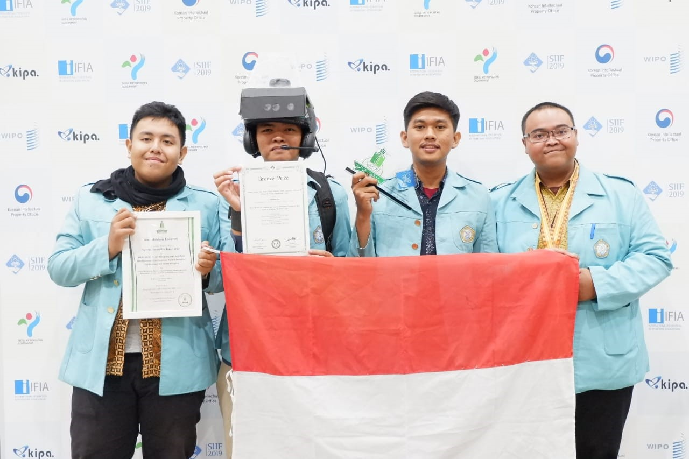
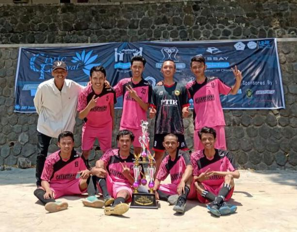
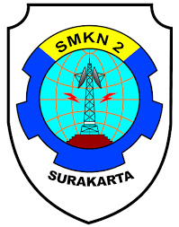

6 MARET 2026
Guru Informatika Surakarta Antusias Ikuti Pelatihan Analisis Data Menggunakan Python dan Google Colab
Kegiatan ini membekali peserta dengan pemanfaatan Python untuk analisis data secara praktis dan aplikatif.
SelanjutnyaAkreditasi BAN-PT adalah bentuk pengakuan resmi terhadap mutu institusi atau program studi dalam pendidikan tinggi.
Baca SelengkapnyaPTIK menempati gedung representatif dan memiliki sarana penunjang kegiatan belajar, riset, serta aktivitas mahasiswa.
Baca SelengkapnyaTersedia berbagai jalur penerimaan bagi calon mahasiswa untuk bergabung dalam program studi sesuai ketentuan yang berlaku.
Baca SelengkapnyaAssalamualaikum warahmatullahi wabarakatuh,
Menempuh pendidikan pada jenjang sarjana merupakan pengalaman baru bagi siswa yang baru lulus dari Sekolah Menengah Atas. Ini akan menjadi tonggak bagi mereka yang mencari pengetahuan, keterampilan, dan arah yang jelas bagi karier masa depan. Ketidaksiapan dan ketidakpastian akan menjadi tantangan bagi mahasiswa baru yang sebelumnya terbiasa belajar dalam lingkungan yang lebih terstruktur.
Kurikulum kami mencerminkan upaya untuk menjaga materi pembelajaran agar sejalan dengan perkembangan teknologi yang sangat cepat, sambil tetap mempertahankan kualitas pedagogi dan pembelajaran pada tingkat tertinggi. Pengembangan kurikulum melibatkan praktisi, pakar pendidikan, dan pengguna lulusan dari industri maupun sekolah agar wawasan industri dapat terintegrasi ke dalam kurikulum.
Kami mendorong mahasiswa untuk aktif berpartisipasi dalam kegiatan lokal, nasional, dan internasional agar mereka terpapar pada komunitas sosial, akademik, dan riset di bidang teknologi informasi yang akan mereka masuki setelah lulus dari institusi bereputasi.
Didirikan pada tahun 2012, Program Studi Pendidikan Informatika, Fakultas Keguruan dan Ilmu Pendidikan, Universitas Sebelas Maret memang masih tergolong muda. Namun, capaian fakultas, jaringan keahlian dengan pengguna di sekolah maupun industri, membuat kami semakin yakin bahwa keberhasilan adalah hasil dari kerja sama tim yang solid.
Semoga Allah Yang Maha Kuasa memberkahi kita dengan petunjuk dan ketekunan untuk meraih kesuksesan. Wassalamualaikum warahmatullahi wabarakatuh.

6 MARET 2026
Kegiatan ini membekali peserta dengan pemanfaatan Python untuk analisis data secara praktis dan aplikatif.
Selanjutnya
5 MARET 2026
Program ini mendukung penguatan literasi digital dan inovasi pembelajaran di lembaga pendidikan nonformal.
Selanjutnya
27 FEBRUARI 2026
Workshop ini dirancang untuk meningkatkan kreativitas siswa sekaligus memperkuat pemahaman algoritma dasar.
Selanjutnya